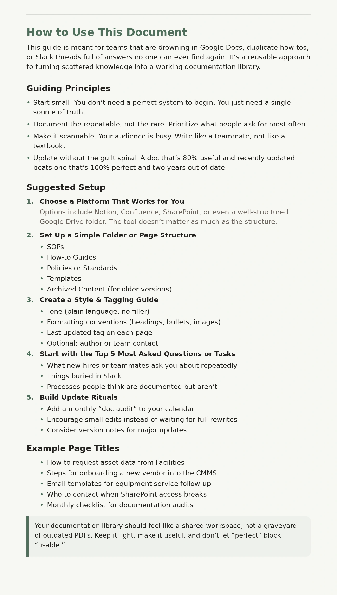

Content Design · Information Architecture · Documentation Strategy
How to Keep Your Docs Alive When You Don't Have a Team of 20
A practical documentation strategy for small teams that need useful, maintainable internal knowledge without a dedicated documentation department.
The problem
Small teams often depend on one person to create and maintain documentation. When that person changes roles, leaves, or simply runs out of time, documentation goes stale and useful knowledge becomes harder to find.
I've worked in environments where information was scattered across documents, platforms, and people's heads. The problem wasn't a lack of information. It was keeping that information useful over time.
The audience
Small teams and under-resourced departments that need a sustainable way to manage internal knowledge without building an elaborate documentation program.
What I did
I broke the problem into six recurring friction points: ownership, versioning, structure, voice, findability, and sustainability.
For each one, I developed lightweight tactics a small team could use without introducing a complicated new system or requiring a dedicated knowledge management department.
The solution
The guide recommends a practical approach to building and maintaining a documentation library:
- Choose one workable home for documentation
- Create a simple, predictable structure
- Establish basic writing and tagging conventions
- Start with the questions and tasks people ask about most
- Assign ownership where it matters
- Build small documentation reviews into normal work
The finished documentation
The finished guide combines documentation strategy with concrete setup recommendations, guiding principles, example page structures, and maintenance practices.

Why I included this piece
Much of the internal documentation I've worked on isn't something I can publish in a portfolio. This piece demonstrates the thinking, structure, and process I've used when working with scattered or difficult-to-maintain documentation.
Skills demonstrated
- Documentation strategy
- Content design
- Information architecture
- Knowledge management
- Plain-language writing
- Content governance
- Internal documentation
- Documentation maintenance